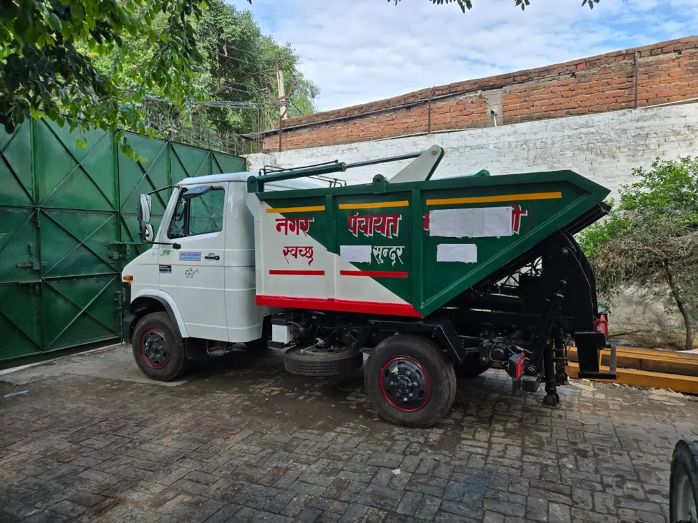

Hopper tipper dumper
A waste collection hopper with a tipping body that unloads collected garbage at a designated transfer or processing point.
- Typical government users
- Municipal sanitation teams, Nagar Palikas and Nagar Panchayats
- Common applications
- Ward-level waste collection from residential lanes and markets, with onward transport to designated waste facilities.